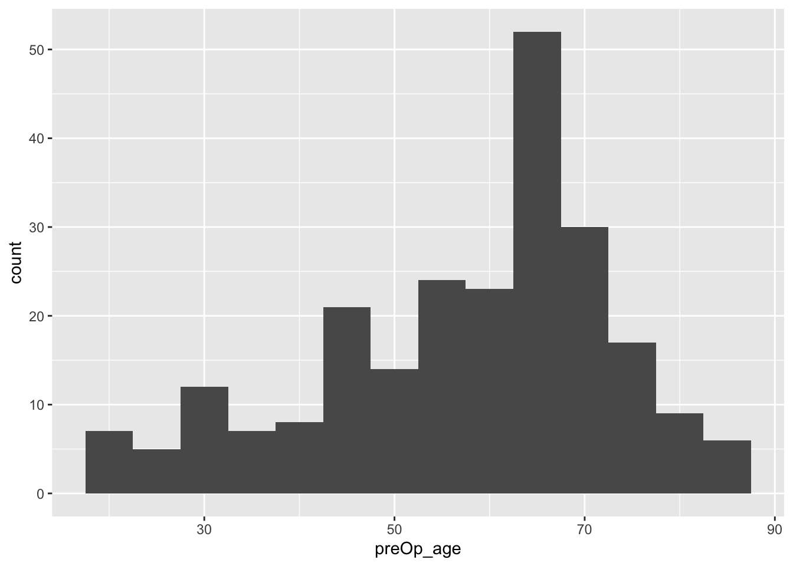

7 Working with binary data
So far all everything we’ve covered has related to continuous outcome variables, which we assumed to be normally distributed. This allowed us to use familiar techniques such as the \(t\)-test, and to take baseline information into account in an accessible way (the linear model / ANCOVA). However, very often clinical trials do not have a continuous, normally distributed output, and in the next two sections we will look at two other common possibilities: binary data (this section) and survival data (next section).
A binary outcome might be something like ‘the patient was alive 2 years after the procedure’ or not, or ‘the patient was clear of eczema within a month’ or not. Such variables are often coded as success or failure, or 0 or 1.
7.1 Sample size for a binary variable
For a trial whose primary outcome variables are binary, the sample size calculations we derived in Chapter 2 will not work.
Suppose we conduct a trial with a binary primary outcome variable and two groups, A and B, containing \(n_A\) and \(n_B\) participants respectively. The number of successes in each group, \(R_A\) and \(R_B\), will be Binomially distributed,
\[\begin{align*} R_A &\sim{Bi\left(n_A,\, \pi_A\right)} \\ R_B &\sim{Bi\left(n_B,\,\pi_B\right)}. \end{align*}\]
Our null hypothesis now is therefore that \(\pi_A = \pi_B\), ie. that the probability of success is the same in each group, and we will need enough participants to test this hypothesis with sufficient power. With the trial data we will be able to produce estimates
\[\begin{align*} p_A & = \frac{R_A}{n_A} \\ p_B & = \frac{R_B}{n_B}. \end{align*}\]
Recall that the variance of \(p_X\) (where \(X\) is \(A\) or \(B\)) is \(\pi_X\left(1-\pi_X\right)\), such that the variance depends on the mean. This means there is no free parameter equivalent to \(\sigma\) in the binary situation, and the number of participants required will depend on the approximate value of \(\pi_A\) and \(\pi_B\). This makes the derivation of a sample size formula somewhat more complicated, and so we first of all make a transformation to remove the dependence of mean and variance. To do this we use an approximation technique called the delta method.
7.1.1 The Delta Method
We start with a random variable \(X\) that has mean \(\mu\) and variance \(\sigma^2 = \sigma^2\left(\mu\right)\), ie. its variance depends on its mean. If we have a ‘well-behaved’ (infinitely differentiable etc.) function \(f\left(X\right)\), what are its mean and variance? To find this exactly requires us to evaluate a sum or integral, and this may be analytically intractable, so we use instead a crude approximation.
First, we expand \(f\left(X\right)\) in a first-order Taylor series about \(\mu\), which gives us
\[\begin{equation} f\left(X\right) \approx f\left(\mu\right) + \left(X-\mu\right)f'\left(\mu\right) \tag{7.1} \end{equation}\]
and therefore
\[\begin{equation} \left(f\left(X\right) - f\left(\mu\right)\right)^2 \approx \left(X-\mu\right)^2\left[f'\left(\mu\right)\right]^2. \tag{7.2} \end{equation}\]
If we take expectations of Equation (7.1) we find \(E\left(f\left(X\right)\right) \approx f\left(\mu\right)\). We can use this in the left-hand side of Equation (7.2) so that when we take expectations of Equation (7.2) we find
\[\begin{equation} \operatorname{var}\left(f\left(X\right)\right) = \sigma^2\left(\mu\right)\left[f'\left(\mu\right)\right]^2, \tag{7.3} \end{equation}\]
where both sides come from
\[\operatorname{var}\left(X\right) = \operatorname{E}\left[\left(X - \mu\right)^2\right] .\] THis series of approximations, which generally works well, is the Delta method.
One way in which it is often used, and the way in which we will use it now, is to find a transformation \(f\left(X\right)\) for which (at least approximately) the variance is unrelated to the mean. To do this, we solve the differential equation
\[ \operatorname{var}\left[f\left(X\right)\right] = \sigma^2\left(\mu\right) \left[f'\left(\mu\right)\right]^2 = \text{constant}. \] In the case of proportions for a binary variable, this becomes
\[ \frac{\pi\left(1-\pi\right)}{n} \left[f'\left(\pi\right)\right]^2 = K\] for some constant \(K\). We can rearrange this to
\[f\left(\pi\right) \propto{ \int{\frac{1}{\sqrt{\pi\left(1-\pi\right)}}d\pi}}\] and by substituting \(\pi = u^2\) we find
\[\begin{align*} f\left(\pi\right) & \propto \int{\frac{1}{\sqrt{u^2\left(1-u^2\right)}}2u\,du}\\ &\propto \int{\frac{1}{\sqrt{1 - u^2}}}du\\ & \propto \arcsin{\left(\sqrt{\pi}\right)}. \end{align*}\]
Setting \(u=\sqrt{\pi}\) again and \(f\left(\pi\right) = \arcsin\left(\sqrt{\pi}\right)\) and using the chain rule, we find
\[\left[f'\left(\pi\right)\right]^2 = \frac{1}{\sqrt{4\pi\left(1-\pi\right)}} .\] Finally, we can substitute this into Equation (7.3), with \(f\left(X\right) = \arcsin\left(\sqrt{X}\right)\) to find
\[\begin{align*} \operatorname{var}\left[f\left(X\right)\right] & \approx \sigma^2\left(\pi\right)\left[f'\left(\pi\right)\right]^2 \\ & \approx{\frac{\pi\left(1-\pi\right)}{n}\cdot\frac{1}{4\pi\left(1-\pi\right)}}\\ & \approx{\frac{1}{4n}}, \end{align*}\]
and we have achieved our aim of finding a transformation of \(X\) whose variance is not related to the mean. This is sometimes called the angular transformation.
7.1.2 A sample size formula
For a binary variable, our estimate \(p_X\) (the proportion of successes in group \(X\)) is approximately normally distributed, since the central limit theorem applies. This is not true for small values of \(n\) (less than around 30, which is very small for a clinical trial) or for values of \(\pi\) close to 0 or 1, say \(\pi<0.15\) or \(\pi>0.85\) (this is more likely to be an issue for some trials).
The linear approximation in Equation (7.1) shows us that if \(p_X\) is normally distributed then \(f\left(p_X\right) = \arcsin\left(\sqrt{p_X}\right)\) will be [approximately] normally distributed too. In fact, \(\arcsin\left(\sqrt{p_A}\right)\) is approximately normally distributed with mean \(\arcsin{\left(\sqrt{\pi_A}\right)}\) and variance \(1/\left(4\pi_A\right)\). Using this information, we can test \(H_0:\,\pi_A =\pi_B\) at the 100\(\alpha\)% confidence level by using the variable
\[ D = \frac{\arcsin{\left(\sqrt{p_A}\right)} - \arcsin{\left(\sqrt{p_B}\right)}}{\frac{1}{\sqrt{4nA}} + \frac{1}{\sqrt{4n_B}}}= \frac{\arcsin{\left(\sqrt{p_A}\right)} - \arcsin{\left(\sqrt{p_B}\right)}}{\frac{1}{2}\lambda\left(n_A,n_B\right)}, \] which is analogous to the variable \(D\) constructed in Section 2.1.3; the difference in \(f\left(p_A\right)\) and \(\f\left(p_B\right)\) divided by the standard error of the difference.
Using the same logic as in Sections 2.1.4 and 2.1.5, the starting place for a sample size formula to achieve significance level \(\alpha\) and power \(\beta\) is
\[ \frac{2\left(\arcsin{\left(\sqrt{\pi_A}\right)} - \arcsin{\left(\sqrt{\pi_B}\right)}\right)}{\lambda\left(n_A,n_B\right)} = z_\beta + z_{\frac{\alpha}{2}}. \] For two groups of equal size \(N\), this leads us to
\[\begin{equation} N = \frac{\left(z_\beta + z_{\frac{\alpha}{2}}\right)^2}{2\left(\arcsin{\left(\sqrt{\pi_A}\right)} - \arcsin{\left(\sqrt{\pi_B}\right)}\right)^2}. \tag{7.4} \end{equation}\]
Because \(\arcsin{\left(\sqrt{\pi_A}\right)} - \arcsin{\left(\sqrt{\pi_B}\right)}\) is not a function of \(\pi_A - \pi_B\), we cannot express this in terms of the difference itself, but instead need to specify the expected probabilities of success in each group. In practice, it is likely that the success rate for the control group \(\left(\pi_A\right)\) is well understood, and the probability for the intervention group \(\left(\pi_B\right)\) can be specified by using the nearest clinically important value of \(\pi_B\).
Example 7.1 (From Smith et al. 1994) This trial compares two approaches to managing malignent low bile duct obstruction: surgical biliary bypass and endoscopic insertion of a stent. The primary outcome variable was ‘Did the patient die within 30d of the procedure?’, and the trial was designed to have \(\alpha=0.05,\,\beta=0.95\), which gives \(z_{\frac{\alpha}{2}}=1.96,\,z_{\beta} = 1.65\). The trial wanted to be able to determine a change in 30 day mortality rate from 0.2 to at most 0.05. Plugging these numbers into Equation (7.4)) gives us
\[ N = \frac{\left(1.65 + 1.96\right)^2}{2\left(\arcsin{\left(\sqrt{0.2}\right)} - \arcsin{\left(\sqrt{0.05}\right)}\right)^2} = 114.9, \] and so each group in our trial should contain 115 patients.
If instead our aim had been to detect a change from around 0.5 to 0.35 (the same in terms of \(\pi_A - \pi_B\)), we would instead have needed
\[ N = \frac{\left(1.65 + 1.96\right)^2}{2\left(\arcsin{\left(\sqrt{0.5}\right)} - \arcsin{\left(\sqrt{0.35}\right)}\right)^2} = 280.8 ,\] that is 281 patients per trial arm.
For a group \(n\) of participants, we will have allocated \(n_C\) to the control group (group \(C\)), and \(n_T\) to the treatment group (group \(T\)). The natural statistical model to apply to this situation is therefore a binomial distribution, for example in group \(C\) the number of ‘successes’ would be modelled by
\[R_C \sim \operatorname{Bi}\left(n_C,\,\pi_C\right).\]
Similarly the number of successes in the treatment group can be modelled as \[R_T \sim\operatorname{Bi}\left(n_T,\,\pi_T\right),\] and the focus of our analysis is on comparing \(\pi_C\) and \(\pi_T\). To do this we will require point estimates of both quantities and interval estimates for some measure of the discrepancy between them. We will also need ways to test the null hypothesis that \(\pi_C = \pi_T.\)
7.2 Point estimates and Hypothesis tests
First of all, we can tabulate the results of a trial with a binary outcome like this:
| Successes | Failures | Total | |
|---|---|---|---|
| Treatment | \(r_T\) | \(n_T-r_T\) | \(n_T\) |
| Control | \(r_C\) | \(n_C-r_C\) | \(n_C\) |
| Total | \(r\) | \(n - r\) | \(n\) |
Note that because this is a table of observed values, they are now all in lower case.
We can estimate \(\pi_C\) and \(\pi_T\) by the sample proportions
\[ \begin{aligned} p_C &= \frac{r_C}{n_C}\\ p_T &= \frac{r_T}{n_T} \end{aligned}. \]
We know from the properties of the binomial distribtion that \(\operatorname{E}\left(p_C\right) = \pi_C\) and \[\operatorname{Var}\left(p_C\right) = \frac{\pi_C\left(1-\pi_C\right)}{n_C},\] and similarly for \(\operatorname{E}\left(p_T\right)\) and \(\operatorname{Var}\left(p_T\right)\).
If we think in terms of individual participants, we have the variable \(y_{iC}\) for the outcome of the \(i\)-th patient in group \(C\), with \(y_{iC}=1\) if the participant’s outcome is ‘success’ and \(y_{iC}=0\) otherwise. Then we have
\[r_C = \sum\limits_{i=1}^{n_C} y_{iC},\] and similarly for group \(T\). Since \(p_C\) and \(p_T\) are therefore sample means, we can apply the Central Limit Theorem to conclude that \(p_C\) and \(p_P\) can be approximated by normal distributions:
\[ \begin{aligned} p_C & \sim N\left(\pi_C,\, \frac{\pi_C\left(1-\pi_c\right)}{n_C}\right)\\ p_T & \sim N\left(\pi_T,\, \frac{\pi_T\left(1-\pi_T\right)}{n_T}\right). \end{aligned} \]
This means we can test the null hypothesis that \(\pi_C = \pi_T\) by referring our observed value of \(p_T - p_C\) to a normal distribution with mean 0 and variance
\[ \frac{\pi_T\left(1-\pi_T\right)}{n_T} + \frac{\pi_C\left(1-\pi_c\right)}{n_C},\]
which we can approximate by substituting in \(p_C\) and \(p_T\).
However, since under the null hypothesis \(\pi_C = \pi_T = \pi\), it would be more appropriate to use this as the common variance. In this case, the variance of \(p_T - p_C\) becomes
\[\pi\left(1-\pi\right)\left(\frac{1}{n_C} + \frac{1}{n_T}\right), \] and in calculations we replace \(\pi\) with \(p = r/n\).
Putting all this together, our test statistic is
\[Z = \frac{p_T - p_C}{\sqrt{p\left(1-p\right)\left(\frac{1}{n_T} + \frac{1}{n_C}\right)}}.\]
Example 7.2 The data in this example comes from al (1948), in which 109 patients with tuberculosis were assigned to either receive Streptomycin, or the control group. The primary outcome variable is whether or not the patient was improved after the treatment period. The data include several other covariates, including gender, baseline condition (good, fair or poor) and whether the patient had developed resistance to streptomycin after 6 months.
## improved
## arm FALSE TRUE
## Streptomycin 17 38
## Control 35 17We therefore have
\[ \begin{aligned} n_C & = 52 \\ n_T & = 55 \\ p_C & = \frac{17}{17+35} & = 0.327\\ p_T & = \frac{38}{38+17} & = 0.691\\ p & = \frac{38+17}{107} &= 0.514. \end{aligned} \] and can calculate our \(Z\) statistic to be
\[ \begin{aligned} Z & = \frac{0.691 - 0.327}{\sqrt{0.514\left(1-0.514\right)\left(\frac{1}{52} + \frac{1}{55}\right)}}\\ & = 3.765. \end{aligned} \]
Finally, we can find the \(p\)-value of this test statistic (making sure to have two tails!)
## [1] 0.0001665491So we can reject the hypothesis that streptomycin has no effect on tuberculosis at the \(\alpha=0.05\) level (and indeed many lower levels).
7.2.1 An alternative approach: chi-squared
Another way to approach this would be to conduct a chi-squared test.
In a chi-squared test, we first calculate the expected values \(\left(E_i\right)\) in each box of the summary table, and compare them to the observed values \(\left(O_i\right)\) by finding the summary statistic
\[ X^2 = \sum \frac{\left(o_i - e_i\right)^2}{e_i}.\]
Under the null hypothesis (that \(p_C = p_T\)) this has a \(\chi^2\) distribution with one degree of freedom. We see that the larger the differences between the observed and expected values, relative to the expected values, the larger the test statistic, and therefore the less probably under the \(\chi^2_1\) distribution.
Example 7.3 Continuing our streptomycin example, we can calculate a table of expected values by observing that proportion \(p=0.514\) of the total number of patients were improved. There are 52 in the control group, therefore we expect \(0.514\times 52 = 26.73\) improved patients in the control group, and by the same logic \(0.514\times 55 = 28.27\) in the treatment group. Our expected table is therefore
## improved
## arm FALSE TRUE
## Streptomycin 26.730 28.270
## Control 25.272 26.728We can therefore calculate the \(\chi^2\) statistic by looping through the elements of the tables:
sum_chi_sq = 0 # set a running total going
# in the following, tab_obs is the table of observed values and
# tab_exp is the table of expected values
for (i in 1:2){
for (j in 1:2){
tmp = ((tab_obs[i,j] - tab_exp[i,j])^2)/tab_exp[i,j]
sum_chi_sq = sum_chi_sq + tmp
}
}
sum_chi_sq## [1] 14.17595## [1] 0.0001664847and again we have a very significant result.
In fact, these two tests are almost equivalent, and we have that \(\sqrt{X^2} = Z\):
## [1] 3.7650977.2.2 Likelihood: A more rigorous way
Our method above was quite informal, and also made heavy use of the central limit theorem. We can use maximum likelhood to derive a more formally justified test for binary outcomes. This also lays a good foundation for more complex situations.
Earlier we set up notation \(y_{iC}\) to be outcome variable (0 or 1, in this case) of the \(i\)-th participant in the control group (and so on), and we will use that here.
The contribution of the \(i\)-th patient in group \(C\) to the likelihood is
\[\pi_C^{y_{iC}}\left(1 - \pi_C\right)^{y_{iC}} \] (remember we can ignore multiplicative constant terms). Combining all \(n_C\) patients in group \(C\), their contribution will be
\[ \pi_C^{r_C}\left(1-\pi_C\right)^{n_C - r_C},\] where \(r_C\) is the number of ‘successes’ in group \(C\). Similarly for the treatment group we will have
\[ \pi_T^{r_T}\left(1-\pi_T\right)^{n_T - r_T}.\] Gathering these terms together we can find the complete likelihood function
\[ \begin{aligned} L\left(\pi_C,\pi_T \mid \left\lbrace y_{iC}\right\rbrace, \left\lbrace y_{iT}\right\rbrace \right) & L\left( \pi_C,\pi_T \mid {n_C,n_T, r_C, r_T}\right)\\ & = \pi_C^{r_C}\left(1-\pi_C\right)^{n_C - r_C}\pi_T^{r_T}\left(1-\pi_T\right)^{n_T - r_T}. \end{aligned} \] The log-likelihood is therefore
\[ l\left( \pi_C,\pi_T \mid {n_C,n_T, r_C, r_T}\right) = r_C\log\pi_C + \left(n_C-r_C\right)\log\left(1-\pi_C\right) + r_T\log\pi_T + \left(n_T-r_T\right)\log\left(1-\pi_T\right).\] If we differentiate with respect to \(\pi_C\), we find
\[\frac{\mathrm{d} l\left( \pi_C,\pi_T \mid {n_C,n_T, r_C, r_T}\right)}{\mathrm{d}\pi_C} = \frac{r_C}{\pi_C} - \frac{n_C-r_C}{1-\pi_C}.\] Setting this to zero we find (reassuringly!) that \(\hat\pi_C = \frac{r_C}{n_C}\). We can repeat this exercise for \(\pi_T\). If we assume that there is one common probability \(\pi\) of success, we can find \(\hat\pi\) by maximising \(l\left(\pi,\pi \mid {n_C,n_T, r_C, r_T}\right)\) with respect to \(\pi\), and again this works out to be \(\frac{r_{C} + r_T}{n}\) as before.
We can use these to construct a likelihood ratio test, by calculating
\[ \begin{aligned} \lambda_{LR} = & -2\left[l\left( \hat\pi,\hat\pi \mid {n_C,n_T, r_C, r_T}\right) - l\left( \hat\pi_C,\hat\pi_T \mid {n_C,n_T, r_C, r_T}\right)\right]\\ = & 2\left[\underbrace{r_C\log\frac{r_C}{n_C} + \left(n_C-r_C\right)\log\left(1-\frac{r_C}{n_C}\right) + r_T\log\frac{r_T}{n_T} + \left(n_T-r_T\right)\log\left(1-\frac{r_T}{n_T}\right) }_{l\left( \hat\pi_C,\hat\pi_T \mid {n_C,n_T, r_C, r_T}\right)} \right. \\ &\;\;\;\;\;\; \left. - \underbrace{\Big(r\log\left(p\right) + \left(n-r\right)\log\left(1-p\right)\Big)}_{l\left( \hat\pi,\hat\pi \mid {n_C,n_T, r_C, r_T}\right)}\right]\\ =& 2\left[\underbrace{r_C \log\left(\frac{r_C}{n_C p}\right)}_{\text{Group }C\text{ success}} + \underbrace{\left(n_C - r_C\right)\log\left(\frac{n_C - r_C}{n_C\left(1-p\right)}\right)}_{\text{Group }C\text{ fail}} \right.\\ & \;\;\;\;\;\; \left.+ \underbrace{r_T \log\left(\frac{r_T}{n_T p}\right)}_{\text{Group }T\text{ success}} + \underbrace{\left(n_T - r_T\right)\log\left(\frac{n_T - r_T}{n_T\left(1-p\right)}\right)}_{\text{Group }T\text{ fail}}\right] \end{aligned} \] where we use \(p,\, r,\, n\) to denote the pooled values (\(n = n_C + n_T\) etc.).
Each term in the final line corresponds to a subgroup of the participants, as labelled, and if we rearrange them slightly we see that this can be re-written as
\[\lambda_{LR} = 2 \sum\limits_{i\in G} o_i \log\left(\frac{o_i}{e_i}\right),\] where \(G\) is the set of subgroups (group \(C\) success etc.). Under the null hypothesis that \(\pi_C = \pi_T = \pi\), and for sufficiently large \(n_C,\;n_T\), \(\lambda_{LR}\) has a \(\chi^2\) distribution with one degree of freedom.
Example 7.4 Continuing with the streptomycin example, we can calculate this new test statistic in R by looping through the subgroups.
sum_LR = 0 # set a running total going
# in the following, tab_obs is the table of observed values and
# tab_exp is the table of expected values
for (i in 1:2){
for (j in 1:2){
tmp = tab_obs[i,j] * log(tab_obs[i,j]/tab_exp[i,j])
sum_LR = sum_LR + tmp
}
}
teststat_LR = 2*sum_LR
teststat_LR## [1] 14.5028## [1] 0.0001399516Not surprisingly, this value is quite close to the one we obtained earlier!
7.3 Measures of difference for binary data
In the above example the question we were interested in was ‘is what we’ve observed statistically significant?’ and in our streptomycin example the answer was a resounding ‘Yes!’. However, if we then ask questions like ‘How big is the difference between the effects of each treatment?’ or ‘What is the treatment effect?’, things get a bit less clear.
In the continuous case, it made sense to simply think about the treatment effect as the difference \(\mu_T - \mu_C\) between outcomes. However, in the binary case there are a few different ways we can think of the difference between two proportions \(\pi_C\) and \(\pi_T\), and each of them requires a different approach.
7.3.1 Absolute risk difference and Number Needed to Treat
The absolute risk difference is
\[\text{ARD} = \pi_T - \pi_C,\] and is sometimes used. However, it loses a lot of information that we’d probably like to keep in some how. For example, suppose a treatment reduces the incidence of some terrible symptom from \(\pi_C=0.03\) to \(\pi_T=0.01\). The absolute risk difference is \(0.02\) here. For some other treatment that results in a reduction from \(\pi_C=0.57\) to \(\pi_T = 0.55\) we have the same absolute risk difference, even though it feels (and is!) a much less significant reduction.
It is useful though to remember that usually these numbers are about people. If the outcome is ‘cured’ or ‘not cured’, then for some cohort of \(N\) patients, \(N\times\text{ARD}\) is the number of extra patients you would expect to cure if you used treatment \(T\) instead of treatment \(C\) (which may be nothing or may some usual course of treatment).
Linked to this is the number needed to treat (NNT), which is defined as
\[ \text{NNT} = \frac{1}{\pi_T - \pi_C} = \frac{1}{\text{ARD}}. \] The NNT is the number of patients you’d need to treat (with treatment \(T\) rather than \(C\)) before you would bring benefit to one extra patient. The website TheNNT collects together results from many clinical trials and uses the NNT as a summary. Some of the results are quite surprising, compared to how effective we think medicines are!
The NNT is popular as a clinical benchmark, and provides useful intuition in terms of the number of people it will help. For example, if \(\pi_T = 0.25,\,\pi_C=0.2\), then \(\text{ARD} = 0.05\) and \(\text{NNT} = 20.\) After treating 20 patients with treatment \(C\) we expect to cure (say) 4, whereas treating 20 patients with treatment \(T\) it is expected that we will cure 5. For very small proportions, the NNT can be large even for what appears to be an important difference. For example, if \(\pi_C=0.005\) and \(\pi_T = 0.015\) then \(\text{ARD}=0.01\) and \(\text{NNT}=100\). It might be decided that the necessary changes and costs are not worth it for such a small difference. That said, the NNT is not the easiest statistic to work with, as we shall see!
Let’s suppose we want to work with the ARD, and to make a confidence interval for the treatment difference \(\tau_{ARD} = \pi_T - \pi_C\). Using the same normal approximation as before, we can estimate \(\tau_{ARD}\) by \(p_T - p_C\), and \(\operatorname{var}\left(p_T - p_C\right)\) by
\[ \frac{p_T\left(1-p_T\right)}{n_T} + \frac{p_C\left(1-p_C\right)}{n_C}.\] Our \(100\left(1-\alpha\right)\)% confidence interval is therefore given by
\[\left(p_T - p_C - z_{\frac{\alpha}{2}}\sqrt{\frac{p_T\left(1-p_T\right)}{n_T} + \frac{p_C\left(1-p_C\right)}{n_C}},\; p_T - p_C + z_{\frac{\alpha}{2}}\sqrt{\frac{p_T\left(1-p_T\right)}{n_T} + \frac{p_C\left(1-p_C\right)}{n_C}}\right) \]
Example 7.5 Back to our streptomycin example, we can now construct a \(100\left(1-\alpha\right)\)% confidence interval for the ARD.
Our estimated treatment effect is (to 3 decimal places)
\[\hat\tau=p_T - p_C = \frac{38}{55} - \frac{17}{52} = 0.364.\] Our estimate of the standard error of \(\hat\tau\) is
\[ \begin{aligned} \frac{p_T\left(1-p_T\right)}{n_T} + \frac{p_C\left(1-p_C\right)}{n_C} & = \frac{\frac{38}{55}\times \frac{17}{55}}{55} + \frac{\frac{17}{52}\times \frac{35}{52}}{52}\\ & = 0.0811 \end{aligned} \] and therefore a 95% confidence interval for \(\tau_{ARD}\) is
\[\left(0.364 - z_{0.975}\sqrt{0.0811},\; 0.364 + z_{0.975}\sqrt{0.0811}\right) = \left(0.187,\; 0.541\right). \] As we should expect from the very low \(p\)-value we saw, the 95% confidence interval does not contain zero.
If we want to think instead in terms of NNT (the number needed to treat), then we need to find the reciprocal of our estimate of \(\tau_{ARD}\):
\[ \text{NNT} = \frac{1}{\tau_{ARD}} = \frac{1}{0.364} = 2.75.\] That is, we would expect to treat nearly three patients before one is improved (in terms of their tuberculosis symptoms). We can use the limits of the 95% CI for \(\tau_{ARD}\) to form a 95% CI for NNT, simply by taking the reciprocals of the limits to get
\[\left(\frac{1}{0.541},\; \frac{1}{0.178}\right) = \left(1.85,\; 5.34 \right).\] Because the NNT is the reciprocal of something approximately normally distributed, it has a distribution with a long tail, and we see that the confidence interval is therefore skewed.

7.3.1.1 What if the difference is not significant?
In the above section you might have already wondered what happens if the confidence interval for the absolute risk difference (ARD) contains zero. To illustrate this, we will use the same data as for our streptomycin example, but will pretend that it was a smaller trial (about a quarter of the size).
:::{.example}
Our new (quartered) dataset will be
## improved
## arm FALSE TRUE
## Streptomycin 4 10
## Control 9 4| Successes | Failures | Total | |
|---|---|---|---|
| Streptomycin | 9 | 4 | 13 |
| Control | 4 | 9 | 13 |
| Total | 13 | 13 | 26 |
The ARD is now \[ \]